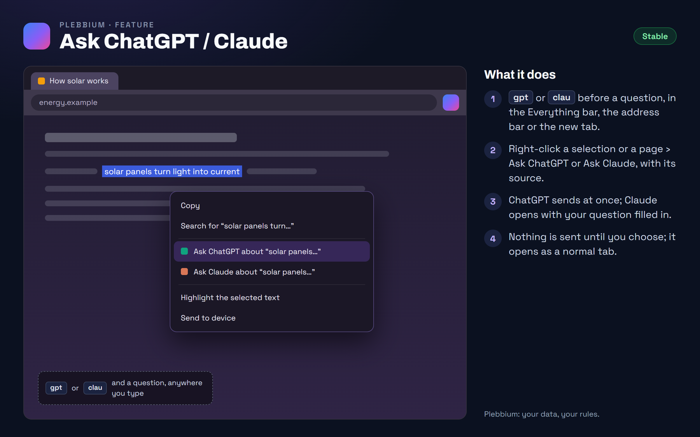

All features › Shipped › Ask ChatGPT / Claude
Ask ChatGPT / Claude
Stablesince 3604Ask ChatGPT or Claude from wherever you are: type gpt or clau and your question in the Everything bar, the address bar or the new tab, or right-click a selection or a page to ask about it, with its source.

How to use it
- Type gpt or clau, a space and your question, in the Everything bar (Ctrl+Shift+A), the address bar or the new tab's search box.
- A plain question in the Everything bar asks ChatGPT when you press Enter.
- Right-click selected text › Ask ChatGPT about “…” or Ask Claude; right-click a page to ask about the page.
- The address bar shortcuts are ordinary site searches: change or delete them in the browser's search engine settings.
When it arrived
156.0.8078.360418 Oct 2026 · Beta and Stable
Ask ChatGPT and Claude, by keyword and from right-click menus.
Why it works this way
Nothing leaves until you pick
Your question goes to ChatGPT or Claude only when you choose one, as an ordinary tab, signed in or not as you are there. Pleb AI (?) is the one that never leaves your computer.
ChatGPT for a plain question
A question typed without a keyword goes to ChatGPT: Pleb's choice for general questions.
One click, not two
The Ask items sit in the right-click menu itself, not in a submenu.